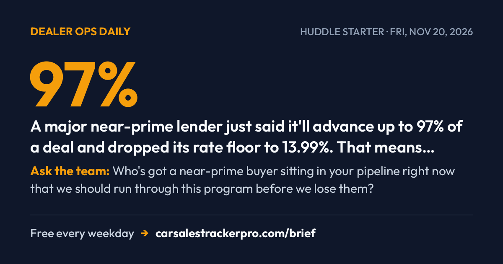

The Next Profit Fight Moves to the Service Drive


Used Car Week wrapped with one clear signal: the money's shifting from the lot to the service drive, and fraud is shifting from paper to AI. Here's what changes on your floor today.
☕ HUDDLE STARTER · read it aloud in 60 seconds
97% — A major near-prime lender just said it'll advance up to 97% of a deal and dropped its rate floor to 13.99%. That means buyers you walked away from last month might actually pencil now.
Ask the team: Who's got a near-prime buyer sitting in your pipeline right now that we should run through this program before we lose them?
⚖️ Protect the deal
Your Customers' Phones Aren't the Only Thing That Can Get Hacked
Security researchers gained remote access to a Volkswagen ID.4's Bluetooth system, pulling text messages, call logs and contacts straight off the infotainment display, according to Wards Auto (Nov. 19). The same week, CBT News reported dealership AI and marketing tools carry similar exposure — and liability for a breach can land on the store, not just the vendor.
Use it today: Ask your GM who's contractually responsible if a customer's data leaks through your CRM, trade-appraisal tool or texting platform — not just through the OEM's app.
Sources: Wards Auto · CBT News
💰 The desk & the box
Capital One Says Fraud and Affordability Are Now the Same Problem
At Used Car Week, a Capital One Auto executive said affordability pressure and a rise in AI-generated fraud — like fabricated pay stubs — are reshaping how lenders vet deals, according to CBT News (Nov. 19); not independently verified beyond the interview.
Use it today: Before you submit a stub that looks reformatted or an income number that's suspiciously round, flag it for your F&I manager first — a declined stip costs you the same mini as a straight decline.
Sources: CBT News
A Lender Just Dropped Its Near-Prime Floor to 13.99%
Agora Data expanded its dealer funding program to near-prime buyers, offering APRs starting at 13.99%, advances up to 97% of the deal, and profit participation for the dealer, according to AutoSuccess (Nov. 19); not independently verified beyond the release.
Use it today: If you've been bumping near-prime buyers because your usual lenders cap advances low, ask your desk whether this program is in your lender stack — it could turn a dead deal into a funded one.
Sources: AutoSuccess
🚗 Market numbers
The Next Profit Fight Isn't on the Lot — It's in the Service Drive
Steve Greenfield, General Partner at Automotive Ventures, told CBT News at Used Car Week that fixed ops — not vehicle sales — will define dealership profitability heading into 2027 as new-vehicle margins keep compressing; not independently verified beyond the interview.
Use it today: If you're building toward a desk or GM role, start tracking your store's service drive capacity and CP labor rate — that's the number the next generation of dealer leadership gets judged on.
Sources: CBT News
🏬 The floor
Cox Automotive Rebuilt Its Service Scheduler Around Fewer Clicks
Cox Automotive launched an enhanced version of Xtime, its consumer-facing service scheduling tool, promising clearer upfront pricing and a consistent flow across mobile and desktop, according to AutoSuccess (Nov. 19); not independently verified beyond the release.
Use it today: If your store runs Xtime, walk through the new booking flow yourself this morning — the first customer who notices the pricing change is going to ask you about it before anyone else.
Sources: AutoSuccess
If this saved you a trip back to the desk this morning, send it to the newest rep on your floor.
Commission calculator
Estimate this month's check from units, gross, pack and minis.
ComparisonPay plan comparison
Put two plans side by side under the same month.
Free trackerTrack every deal
Log each car and watch your month-to-date pay climb.